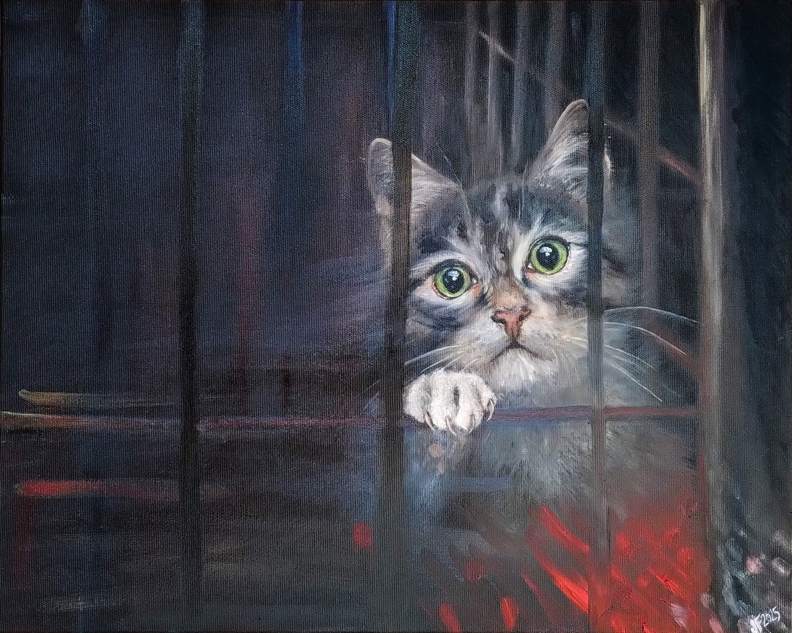
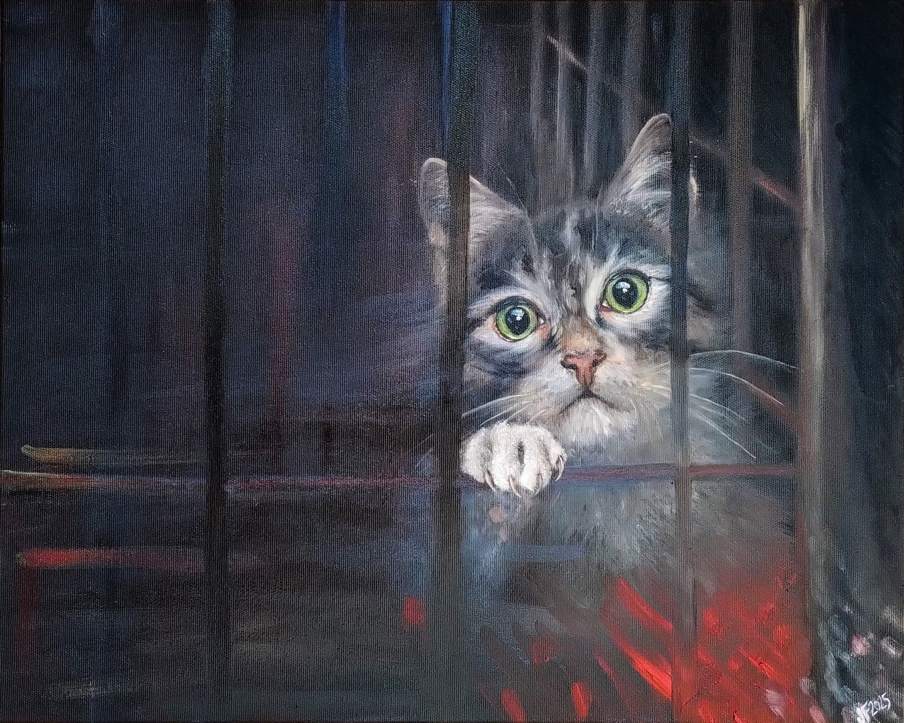

O mně
About Me
Výtvarná činnost pro mě vždy byla oblíbeným koníčkem a účinným způsobem, jak si vyčistit hlavu a uvolnit se. Studovala jsem
biologii a PřF UK (obor imunologie), k přírodě mám tedy hodně blízko a je mi nekonečným zdrojem inspirace. Dělá mi radost vyjádřit svůj
obdiv ke zvířatům, které spolu s námi obývají Zemi, formou kresby a malby.
Základy kresby jsem získala od Mgr. Jana Majera, který v našem městečku otevřel kroužek pro děti a individuálně se nám s nadšením věnoval.
S dalším tvořením jsem pak pokračovala na ZUŠ Vlašim pod vedením Mgr. Jana Dvořáka (2008–2011), který mě zasvětil do mnoha různých výtvarných technik.
Nejvíce jsem si oblíbila umělecké vyjádření olejovými barvami a akvarelem. V letech 2019 a 2020 jsem absolvovala kurz olejomalby v ateliéru AvvY v Praze.
Expresivní umělecká tvorba je pro mě důležitou formou seberozvoje a zpracováním emocí a poskytuje mi naprostou volnost bez hranic.
Kromě umělecké tvorby mě zajímá programování, takže jsem si s tímto uměleckým portfoliem vyhrála od úplných základů včetně zdrojového kódu.
Moje inspirace
My inspiration
Moje tvorba zachycuje momenty ticha, emocí a vnitřních světů.
Zaměřuji se na jemné i intenzivní prožitky přítomného okamžiku—radost i smutek, nejistotu, která se mísí s pocitem blízkosti, opory, touhy i zoufalství.
Všechny tyto pocity se v mých obrazech přelévají jako vlny, vplétají jeden do druhého, tvoří vír.
Emoce znázorňuji prostřednictvím zvířat a přírodních motivů, které umožňují divákovi promítnout si do obrazů vlastní prožitek. Každý obraz vzniká spontánně, veden intuicí a náladou dané chvíle.
Usiluji o to, aby každé dílo vyprávělo příběh a vyvolalo v divákovi pocit spojení s vlastními emocemi.
Olejomalba a akvarel jsou pro mě cestou k sebepoznání a sdílení autentických zážitků.
Portfolio
Portfolio
Expresivní tvorba

 



Kontakt
Contact
Máte-li zájem o zakázku nebo spolupráci, kontaktujte mě prosím e-mailem na julie.fabisikova@gmail.com.